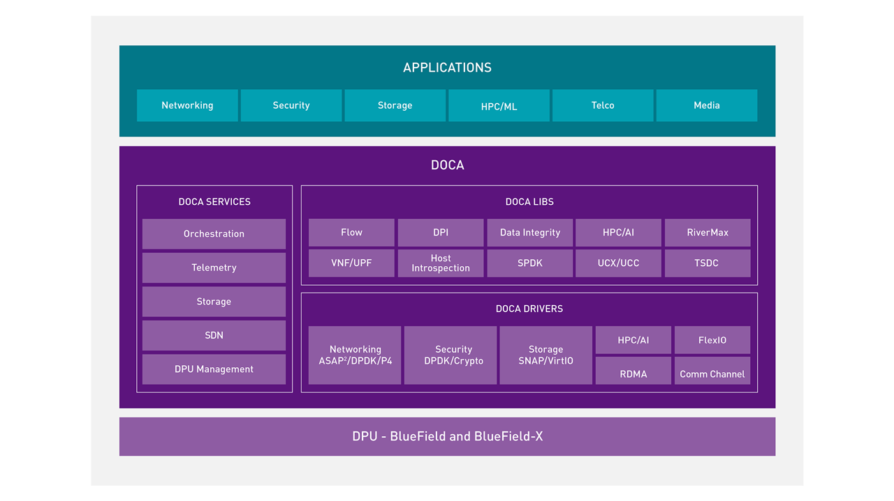
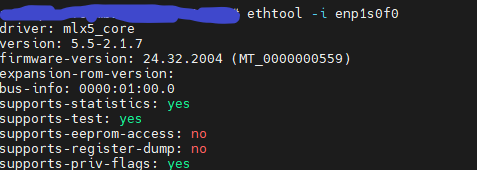
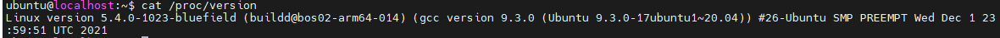
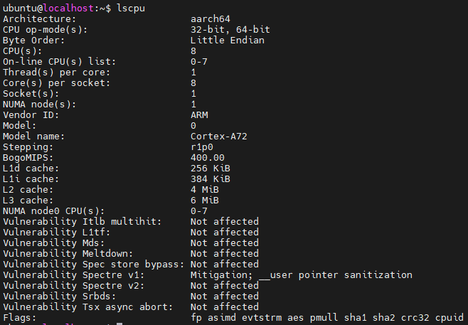
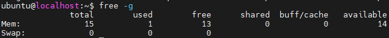

硬件安装参考Nvidia DPU硬件安装文档
在硬件安装上需要注意：硬件安装需要x8的pcie接口，需要注意DPU的散热。本人在1U设备上安装时，刚开始没有散热装置，DPU过热会导致DPU熔断，具体表现为在Host中查看不到DPU设备。由于当时DPU上没有运行任何负载，并没有考虑是过热引起的。目前在DPU前放置一个风扇，可以保证DPU不过热。
DOCA全称为片上数据中心基础设施架构(Data-Center-Infrastructure-On-A-Chip Architecture).通过 NVIDIA® DOCA™ SDK（软件开发套件），开发者能够使用行业标准 API 基于 NVIDIA BlueField® 数据处理器 (DPU) 快速创建应用程序和服务。
SDK 关键组件
安装Doca，参考安装文档
需要注意Host的OS与kernel版本需要严格符合要求，当前仅支持下列的OS和对应的kernel
| Host Operation System | Kernel Support |
|---|---|
| CentOS 7.6 | 3.10.0-957.el7.x86_64 |
| CentOS 8.0 | 4.18.0-80.el8.x86_64 |
| CentOS 8.2 | 4.18.0-193.el8.x86_64 |
| RHEL 7.6 | 3.10.0-957.el7.x86_64 |
| RHEL 8.0 | 4.18.0-80.el8.x86_64 |
| RHEL 8.2 | 4.18.0-193.el8.x86_64 |
| Ubuntu 18.04 | 4.15.0-20-generic |
| Ubuntu 20.04 | 5.4.0-26-generic |
Nvidia推荐使用Nvidia SdkManager安装Doca，参考文档
非root用户，使用如下命令安装Doca
sdkmanager --cli install --logintype devzone --product DOCA --host --target BLUEFIELD2_DPU_TARGETS --targetos Linux --version 1.2.1 --flash all
经过本人实验：
所以后续实验均在Ubuntu20.04上进行
在使用SDK Manager安装Doca时，还会在Host上安装DPU的运行时环境和容器开发环境，同时安装DPU的片上系统，设置登录用户名和密码。
完成后可以在Host上通过ssh连接到DPU的片上系统，DPU通过Rshim，生成一张网卡，默认ip为192.168.100.2
安装完成后使用命令：
sudo /etc/init.d/openibd restart
重新加载驱动，可以在Host上查看DPU的网口

DPU卡上系统为Ubuntu20.04，自带的DPDK版本为20.11
登录到DPU查看基本系统信息，操作系统入如下所示：

DPU片上的Arm核心如下所示

DPU内存为16GB

\
至此，我们完成了DPU运行环境和开发环境的安装